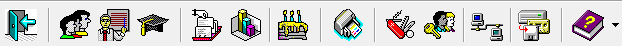
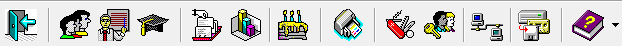

import time
import datetime
import os, sys
from sikuli import *
import Uteis
reload(Uteis)
def userioLogin():
dataInicio = time.time()
strlogin = "SCA"
strsenha = "SCA"
strExecutaveSCA = "C:\Program Files (x86)\Para-quedismo\Sca\Sca.exe"
myApp = App(strExecutaveSCA)
myApp.open()
while not exists( ):
print "[LOG] Aguardando a abertura da tela de login."
wait(1)
print "[LOG] Tela de login aberta com sucesso."
paste(strlogin)
Uteis.tabOrder(1, 0.5)
paste(strsenha)
Uteis.tabOrder(2, 0.5)
type(Key.ENTER)
while not exists ():
print "[LOG] Aguardando a abertura da tela inicial do SCA."
wait(1)
print "[LOG] SCA aberto com sucesso."
return Uteis.delta(dataInicio, time.time())
):
print "[LOG] Aguardando a abertura da tela de login."
wait(1)
print "[LOG] Tela de login aberta com sucesso."
paste(strlogin)
Uteis.tabOrder(1, 0.5)
paste(strsenha)
Uteis.tabOrder(2, 0.5)
type(Key.ENTER)
while not exists ():
print "[LOG] Aguardando a abertura da tela inicial do SCA."
wait(1)
print "[LOG] SCA aberto com sucesso."
return Uteis.delta(dataInicio, time.time())